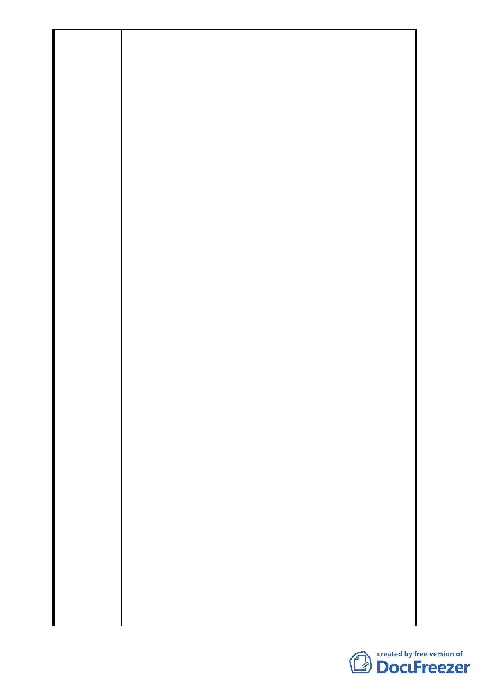

米道路，因為八米道路兩旁路邊停車，往往因差一
米而不得不改為單行道，現主辦單位以拓寬六米道
路為八米道路才辦理專案變更，實令人啼笑皆非，
若欲拓寬為八米道路，為何公園三面道路不變更而
單獨辦理此段不過百米之道路？
（2） 再者若欲將六米道路變更為八米，則為何不採南北
兩側均各退縮一米之方式將六米道路變更為八米道
路？而卻將所欲拓寬兩米之用地均偏向公園用地？
公園用地若變更成功，則 110 巷即向公園側歪斜，
試問，道路不採直線拓寬而採曲線拓寬，臺北市有
此種八米道路嗎？況拓寬為八米後，豈不將公園用
地變更之兩米道路供吉祥區住戶停車之用？則將六
米道路變更為八米，又有何意義？況系爭路段，並
未壅塞，毫無變更之必要。
（3） 辦理都更均聘有專業團隊，道路寬度與建築物高度
之限制為任何一位建築師所熟知及應注意事項，此
種「建築物陰影不足」問題，乃建築師規劃錯誤所
造成，如造成損失，屬建築師與業者之民事糾葛，
因而延宕都更時程，錯在建築師，貴會有必要為建
築師解套而犧牲附近一、二千居民之休憩利益嗎？
退萬步而言，若建管單位審照與過失，在馬總統與
郝市長一向主張依法行政之既定政策下，郝市府有
必要為建築師或審照人員之疏失而違背依法行政之
誓言嗎？
（4） 按退縮二米或一米建築用地，或新設計重新辦理都
更，對建商而言，其損失較支出道路費用相差甚鉅
，試問，區區三百餘萬餘之支出與建商之損失乃天
壤之別，因而自不能以更新會願支付工程費為藉口
，而做為專案變更之理由，何況本案牽涉公務員圖
利之刑事責任，貴會及承辦人員豈能不戒慎恐懼依
法行事？
（5） 該公園距本律師住家不到百米，有犬子成長之回憶
，向為老人聚會之場所，扣除兩米人行道之寬度，
三、四十年來已成拱之老樹勢必遷移，在公聽會上
，貴會自應堅守法治立場，不能在圖利建商之糖衣
包裝以及主管單位任意提出莫須有之理由來專案變
理變更。
3. 依本律師看法，主管建造單位發覺建照核發錯誤存在已
久（恐已近半年以上），在發覺之始不令建商停工循法
處理，卻坐令建商繼續施工造成損害擴大，本案若於發
覺錯誤時即刻依法行政，或許已合法走玩都更程序，如
今卻明知錯誤且有圖利之嫌，而執意專案變更，本律師
甚為不解；案公務員圖利與便民乃一線之間，甚多公務
- 13 -